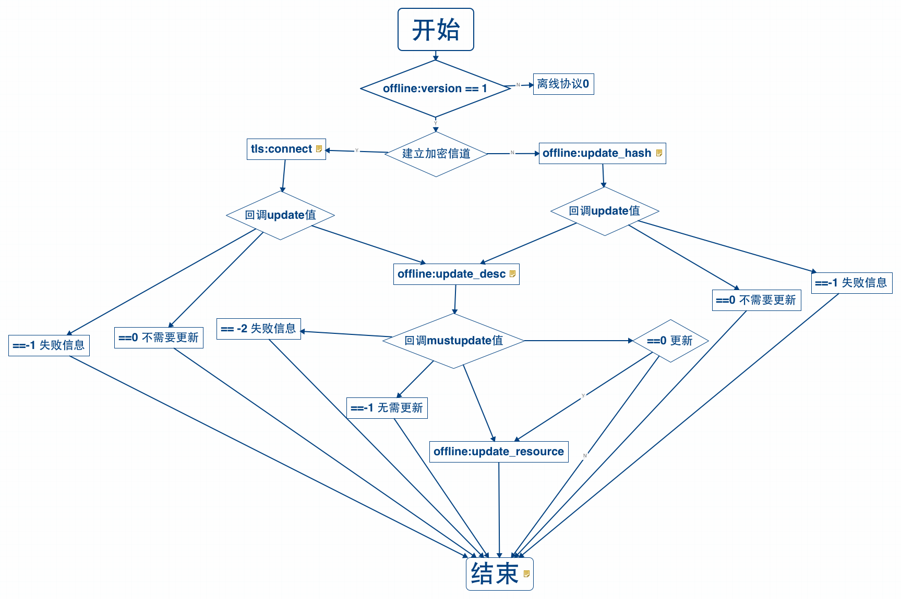
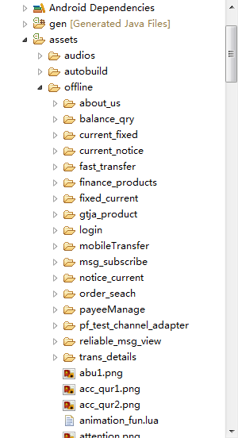

EMP5.2版本中，离线协议进行了一次优化，部分规范和设计进行了调整和修改，因此引入了离线资源版本号来标识新旧版本。旧离线协议版本号定义为0，新版本号定义为1。
此文档中主要讲述最新离线协议版本1的使用。注，Android只在EMP5.2及更高版本中支持1版本离线协议，低版本并不支持。
由于离线协议实现的修改属于产品内部修改，因此在主项目使用1版本离线协议时，不需要针对代码做修改，只需要配置当前使用的离线协议版本即可。
@Override
public void onAdjustEMPConfig(EMPConfig empConfig) {
super.onAdjustEMPConfig(empConfig);
...
// 配置离线协议版本，0或1
empConfig.setOfflineVersion(1);
}
注意
由于历史版本问题，如果主工程配置中含有以下已经废弃的配置，需要删除。
empConfig.setProtocol(EMPConfig.OFFLINE_TCP);
empConfig.setVersion(1);
在优化协议的时候，为了提高离线协议使用的扩展性和简便性，新增了只在1版本离线协议中支持的Lua接口，具体请参见离线协议1版本支持的Lua接口。 同时，新增了和1版本协议配套使用的LuaTLS接口。
在离线协议1版本中，需要离线请求时，先调用tls:connect(callback)或offline:update_hash(callback)，在其回调中判定update字段的值。如果为0，代表无需更新；否则调用offline:update_desc(updateDesc_callback)请求具体的离线资源升级信息。之后在其回调updateDesc_callback中可以取得mustUpdate字段的值，根据值的不同分别进行不同的后续操作。可参见如下流程图：

main.xml文件是进入程序建立加密信道时用到的脚本，具体实现由项目人员编码，在此仅给出示例代码。
为了提高预置资源的加载效率，新协议改变了预置资源的处理流程。
预置资源必须放在主项目的assets\offline目录下，如下图所示。其中：
offline文件夹；offline文件夹；
预置资源的描述内容，必须写到assets\offline.json文件中。预置资源描述中包含必选资源描述,可选资源描述。
| c | 对象 | 同desc | 插件zip包中文件的所有描述 |
| l | 对象 | 同download | 必选资源更新描述 |
| o | 对象 | 同option_download | 可选资源下载列表 |
| p | 对象 | 预置的可选资源描述 | |
| t | number类型 | 同tcp_port | tcp下载端口,只有tcp下载模式下才有此字段 |
| r | string类型 | 同rev | 文件sha1值 |
| s | string类型 | 同hash | 离线资源描述的hash值。此hash值分类两种，必选资源描述的hash值，可选资源描述的hash值。必选资源描述的hash值在l字段中，可选资源描述的hash值在 o字段中 |
| e | number类型 | 同encrypt | 文件是否加密保存。1，加密。0，不加密。默认为0，且如果为默认，则省略此字段 |
| u | number类型 | 同ensure_download | 是否确保更新。1，确保更新；0，非确保更新。默认为0，且如果为默认，则省略此字段 |
| dir | string类型 | 表示文件下载的基础路径，将相同基础路径的资源作为一组。如示例中的dir1 | |
| file | string类型 | 表示文件的相对路径 |
描述样例:
{
"l" :
{
"s" : "c4f3cffb7d68e63531c60e74611a2d2f569173e7"
"zip1.zip" :
{
"r" : "c4f3cffb7d68e63531c60e74611a2d2f569173e7"
"e" : 1 //如果不需要加密存储,则没有此字段
"n" : "插件包说明"
"c" :
{
"file1" : "c4f3cffb7d68e63531c60e74611a2d2f569173e7" //file1为相对于zip1的相对路径
}
}
"file1" :
{
"r" : "c4f3cffb7d68e63531c60e74611a2d2f569173e7"
"n" : "普通资源说明"
"e" : 1 //如果不需要加密存储,则没有此字段
}
}
"p" :
{
"zip2.zip" :
{
"r" : "c4f3cffb7d68e63531c60e74611a2d2f569173e7"
"e" : 1 //如果不需要加密存储,则没有此字段
"c" :
{
"file1" : "c4f3cffb7d68e63531c60e74611a2d2f569173e7" //file1为相对于zip1的相对路径
}
}
}
"o" :
{
"t" : 4060, //tcp下载端口
"s" : "c4f3cffb7d68e63531c60e74611a2d2f569173e7"
"dir1" : //如:ebank/resources/common/zip
{
"s" : "c4f3cffb7d68e63531c60e74611a2d2f569173e7" //可选资源校验值
"zip1.zip" : //zip包中部分文件的更新 如: account.zip
{
"r" : "c4f3cffb7d68e63531c60e74611a2d2f569173e7"
"e" : 1 //1,加密, 0,不加密 默认为0,且如果为默认,则省略此字段
"c" : //需要下载文件的列表
{
"file1" : //file1为相对于zip1的相对路径,如:account/xhtml/index.xml
{
"r" : "c4f3cffb7d68e63531c60e74611a2d2f569173e7"
"u" : 1 //1,确保更新, 0,非确保更新 默认为0,且如果为默认,则省略此字段
}
}
}
}
}
}
对于非预置的离线资源，主要保存在应用安装后的私有数据路径下的两个目录中：
offline-resources为除预置包外下载的普通资源文件的存放文件夹；plug-in-resources为除预置包外下载的插件资源包文件的存放文件夹。注意：资源文件的访问顺序:plug-in-resources > offline-resources > offline > write-resources(file:write Lua接口保存的文件) > 安装包其他资源。如果查找成功，经校检合格后方可使用。